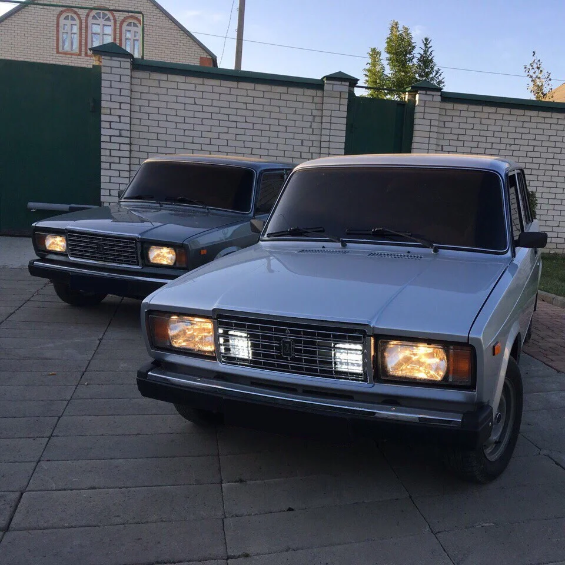

Привет, опер
Оперский стиль - это целое искусство: машина должна быть в идеале, всегда намытая, зачастую без номеров, нередко со вспышками ФСО.
Откуда взялось название? - ответ довольно прост: зачастую Операм(Оперуполномоченным) разрешают ездить затонированными. Почему же? - ответ также прост: чтобы слиться с окружающими, зачастую молодежью, которая любит катать тачки в бункер.
ой статус
#выписывай!
Контакты для связи
Вконтакте: Шумаков Глеб
телефон: +79090000009